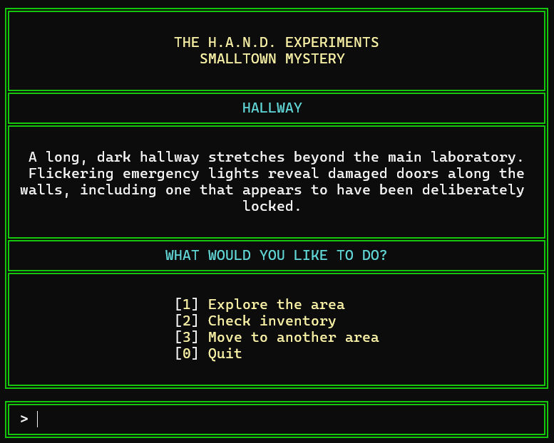

Programming
C++, object-oriented programming, classes and objects, vectors, functions, loops, and input validation
Game Development Student
I am a Game Development student at Full Sail University with an interest in both programming and creative storytelling. I am developing my technical skills in C++ while learning how programming, narrative, and interactive systems can work together to create meaningful experiences for players.
About Me
I am currently studying Game Development at Full Sail University and expect to graduate in 2028. My interest in game development grew from my interest in creative writing and storytelling. As I continue learning programming, I want to understand both the creative and technical sides of game development so I can become a more versatile developer.
My current work focuses primarily on C++ projects that have helped me develop experience with object-oriented programming, classes and objects, vectors, functions, input validation, debugging, and project organization. After graduation, I hope to work with an established game studio where I can continue developing my skills and building my portfolio. My long-term goal is to create original games and eventually establish my own studio.
C++, object-oriented programming, classes and objects, vectors, functions, loops, and input validation
Visual Studio, Git, GitHub, branches, pull requests, debugging, and project planning
Game development, clean and reusable code, interactive systems, problem-solving, and narrative design
Featured Work
A selection of projects demonstrating my development experience, technical skills, and growth as a game development student.

C++ Text-Based Adventure Game
The H.A.N.D. Experiments: Smalltown Mystery is a text-based adventure game set inside an abandoned laboratory. The player explores different areas, collects items, examines clues, and uses discovered items to gain access to new locations.
C++, Visual Studio, object-oriented programming, vectors, Git, GitHub, branches, issues, and pull requests.
One of the largest challenges was connecting the inventory, room, and progression systems while keeping the game's menus and navigation consistent. During the final milestone, I also refactored repeated interface and message-screen code into reusable functions while testing each change to avoid breaking existing gameplay.
This project helped me become more comfortable organizing a larger C++ program using multiple classes and systems. I also learned the importance of testing and refactoring code after the main features are functional, rather than considering a feature complete as soon as it works.
Contact
I am continuing to develop my programming and game development skills and am interested in opportunities that allow me to learn, collaborate, and gain experience creating interactive projects.